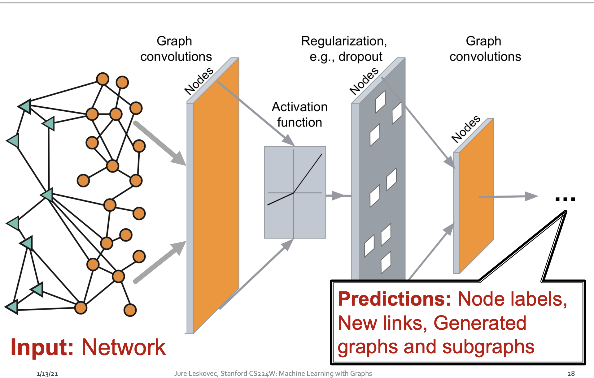
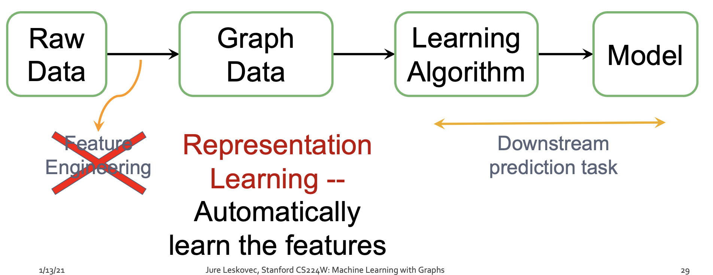
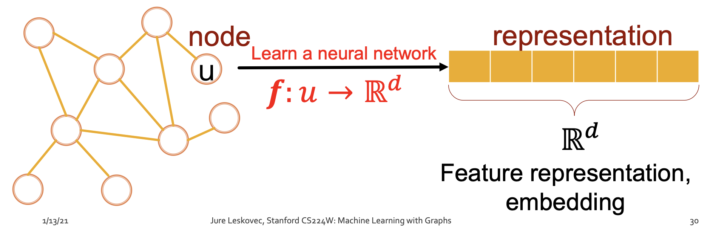
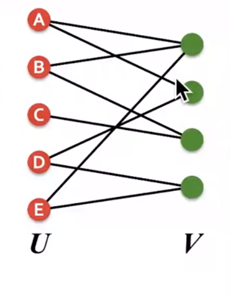
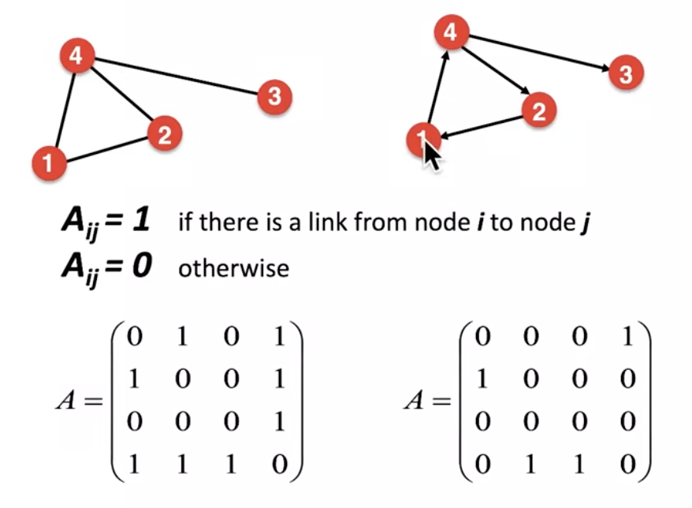
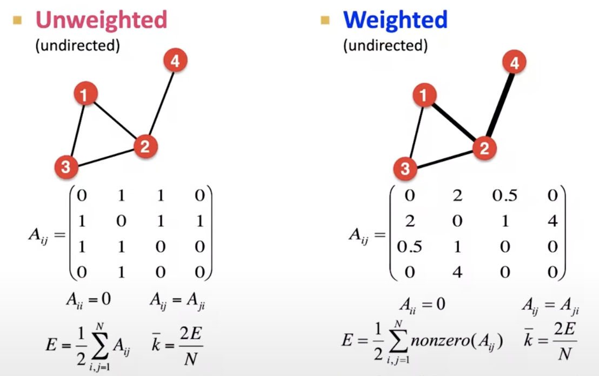
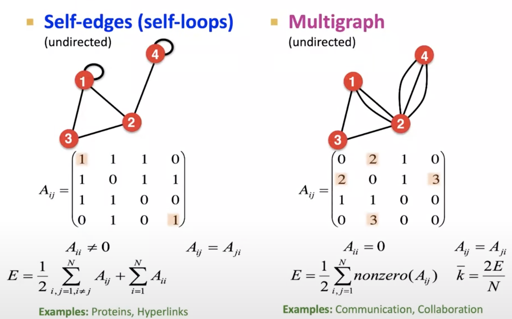

Introduction ML for Graphs
Contents
Introduction ML for Graphs#
Links#
Stanford YouTube Online playlist
Reference books
Graph ML tools
DeepSNAP
GraphGym
SNAP.PY
NetworkX
Introduction#
Graphs are a general language for describing and analyzing entities with relations/interactions
we can think of graphs as network of relations between entities
the entities are related to each other
we need to model the underlying data which has a relationship among themselves
many types of data can be represented as graphs
types of graphs
event graphs
computer networks
disease pathways
food webs
particle networks
undergroud networks
social networks
economic networks
communication networks
citation networks
internet
network of neurons
knowledge of graphs
regulatory networks
scene graphs
code graphs
molecules
3d-shapes
graph relational data
Types of Networks and Graphs#
Networks or Natural graphs
social networks - society of 7+billion people
communication and transactions - in the form of phone calls or financial transactions
biomedicine - the interactions between genes/proteins
brain connections - in the form of neurons
Graphs
information and knowledge can be organized and linked together
software can be represented as graph
similarity networks connect similar data points
relational structures of molecules types or physics simulation
distinction between networks and graphs is blurred
how to take advantage of relational structure for better predictions
complex domains have rich relational structure which can be represented as relational graph
this leads to achieve better performance
Graphs and Relational Data#
complex domains have rich relational structure - relational graph
deep learning toolbox
graphs are frontier of deep learning
graph has complex topology than images or text
in text there is left and right words/characters
in images there is top/bottom/right/left pixels, so they have reference points
in graphs
no notion of spatial locality like grids
graphs are dynamic and multimodal nodes

in this course, we will learn to build neural network
as input, will have a graph
as output, will have a prediction
prediction can be at the
level of nodes
or pairs of nodes/links
or a complex new graph
the question is how to build this neural structure that will allow us to make this predictions
how to design neural network so that no human feature engineering ( feature engineering) is needed
instead of feature engineering - representation learning is used
feature engineering is the way of how to capture the data, so that machine learning models can take advantage of it
representation learning
automatically learn the features
and predict the downstream tasks
map nodes to d-dimensional embeddings/vectors, such that similar nodes in the network are embedded close together in the embedding space

the course will be to learn how to represent this embedding space

Course outline#
Traditional methods: Graphlets, Graph Kernels
Methods for node embeddings: DeepWalk, Node2Vec
Graph Neural Networks: GCN, GraphSAGE, GAT, Theory of GNNs
Heterogenous/Knowledge graphs and reasoning: TransE, BetaE
Deep generative models for graphs
Applications to Biomedicine, Science, Industry
Syllabus#
Introduction; Machine Learning for Graphs
Traditional Methods for ML on Graphs
Node Embeddings
Link Analysis: PageRank
Label Propagation for Node Classification
Graph Neural Networks 1: GNN Model
Graph Neural Networks 2: Design Space
Applications of Graph Neural Networks
Theory of Graph Neural Networks
Knowledge Graph Embeddings
Reasoning over Knowledge Graphs
Frequent Subgraph Mining with GNNs
Community Structure in Networks
Traditional Generative Models for Graphs
Deep Generative Models for Graphs
Scaling Up GNNs
Learning on Dynamic Graphs
GNNs for Computational Biology
GNNs for Science
Industrial Applications of GNNs
Applications of Graph ML#
Different types of task#
formulate tasks at different levels
Node level
Community (or subgraph) level
Edge level
Graph level prediction or Graph generation
Classic Graph ML tasks#
Node classification
predict property of node
categorize online users/items
Link prediction
knowledge graph completion
Graph classification
represent molecules and predict properttiies of molecules
Clustering
community detection or sociial circle detection
Other
Graph generation
drug discovery
Graph evolution
acurate simulations in physics
Nodel level ML problem#
Protein folding
Medicine/drugs bind to proteins and then change behaviour/biological processes
Proteins are made up of amino acids
given a sequence of amino acids, can you predict the 3D structure of underlying protein
Problem:
how to computationally predict a protein’s 3D structure based solely on its amino acid sequence
folding of protein is complex based on amino acid sequence
DeepMind’s AlphaMind is close to solve
Nodes: underlying amino acids were designed in the form of nodes of spatial graph
Edges: proximity between amino acids
Edge level ML tasks#
Link prediction
relationship between different nodes
Recommender systems
Watch movie
listen to music
make predictions using
Graph representation learning
GNN
used in
Pinterest, LinkedIn, Facebook
learn about nodes that are related are closer than ones that are not related
Predict
use feature information/images and transform it across underlying graph to come up with robust embedding
images + graph leads to much better recommendation than graphs itself
understand relationship between pairs of nodes/images saying nodes that are related should be embedded closer together $\( d(z_{cake1}, z_{cake2}) \lt d(z_{cake1}, z_{sweater}) \)$
Drug side effects
many patients simulataneously take 5 or more drugs
these drugs interact with each other
this leads to adverse side effect
cannot test experimentally all combination of drugs to see what kind of side effects they lead to
make a prediction engine that takes arbitrary pair of drugs and predict how these drugs are going to interact and cause adverse side effect
design 2 level of heterogenous network
triangle - represent drugs
circle - represent protein
we have protein-protein interaction network
there are lot of missing connection as how would medicine interact
can we predict missing connections
link predictions problem, given two drugs what can be the side effect
Subgraph-level ML tasks#
Traffic prediction
Google Maps tell us about the estimated time of arrival from point A to point B
road represent node segment
edges represent connectivity between road segments
prediction using GNN (Graph Neural Network)
based on the conditions and traffic patterns on each of the road, prediction is made regarding travel time
Graph-level ML tasks#
Drug discovery
Molecules can be represented as graphs
Atoms as nodes
Chemical bonds as edges
graph NN was used to classify different molecules
which molecule can have theuraputic effect
team at MIT used graph based DL for antibiotic discovery to classify different molecules and predict promising molecules from a pool of candidates
Novel/New Molecule generation
generate molecules that are non-toxic
generate molecules that have high solubility
generate molecules that have high drug likeness
optimize existing molecules to have targetable/desirable properties
Physics based simulation
for different materials i.e., set of particles, how do the particles interact
task for ML is to predict how the graph will evolve in future
how will this material deform/reshape in future
generate proximity graph
how will the particles evolve to their new positions
iterate over how the particles will move and based on this predict their future
Choice of Graph Representation#
Components of network#
Objects - nodes, vertices - N
Interactions - links, edges - E
System - network, graph - G(N,E)
Underlying infrastructure might be same
choosing proper representation
How to build/define a graph#
what are nodes
what are edges
Choice of proper network representation#
connect individuals to form professional network based on their work relationship
connect same individuals to form sexual network based on their sexual relationship
connect same individuals to form citation network based on their scientific paper cites
Directed vs Undirected graphs#
Undirected graphs
useful for modeling symmetrical or reciprocal relationship
For example - collaboration, friendship, interaction between protein
Directed graphs
every link has a direction/source and destination and is denoted by an arrow
there is a source and destination
For example - phone calls, financial transactions, following on Twitter
Node degrees#
Undirected
number of edges adjacent to a given node
each edge gets counted twice
having a self-edge/self-loop adds a degree of 2 to the node
Directed
in-degree - number of edges pointing towards the node
out-degree - number of edges pointing outwards from the node
Bipartite graph#
type of graph whose nodes can be divided into 2 disjoint sets/partitions
edges go only from left to right
not inside the same partition
the sets are independent
examples
Authors to papers (they authored)
Authors to movies (they appeared in)
Users to movies (they rated)
Folded networks
author collaboration networks
Movie co-rating networks

\(\tiny{\text{YouTube-Stanford-CS224W-Jure Leskovec}}\)
Folded/Projected Bipartite graphs#
If we have a bipartite graph, we can project this bipartite graph to either left or right side
use nodes from one side in my projection graph
the way we connect the nodes
create a connection between pair of nodes
if they have one neighbor in common
1,2,3 co-authored a paper
3 and 4 did not co-author a paper
2 and 5 co-authored a paper
create a projection on the right side
\(\tiny{\text{YouTube-Stanford-CS224W-Jure Leskovec}}\)
Representing Graphs - Adjacency Matrix#
matrix will take entries of 0 and 1 (binary)
value of matrix element \(A_{ij}\) will be set to 1, if nodes i and j are connected
undirected graph
the matrix are symmetric
directed graph
the matrix are not symmetric
node degrees are different for directed and undirected graph
adjacency matrices are sparse
extremely sparse

\(\tiny{\text{YouTube-Stanford-CS224W-Jure Leskovec}}\)
Adjacency list#
Adjacency list
most real world networks are very sparse
very easier to work with sparse matrix
simply store the neighbors
for undirected - simply store the neighbors
for directed - store both in-going and out-going neighbors
Example (store neighbors node information)
1:
2: 3,4
3: 2,4
4: 5
Edge list and Adjacency list#
Edge list
quite popular
very hard to graph manuplation
represent as two-dimensional matrix
Example
(2,3)
(2,4)
(3,2)
Node and Edge attributes#
how to attach attributes and properties
edge can have a weight, how strong is the friendship
edge can have a rank, or type of friend
More types of graphs#
unweighted - undirected
weighted - undirected (how strong is the relationship)
self-edges (self-loops) - undirected (entries in diagonal)
multigraph - undirected (entries might have different properties)


\(\tiny{\text{YouTube-Stanford-CS224W-Jure Leskovec}}\)
Connectivity of undirected graph#
can be joined by path
block matrices
tell us if the graph is inter-connected or not
isolated node
block diagonal structure
Connectivity of directed graph#
strongly or weakly connectivity
strong
has a directed path for every node
weakly
disregard/ignore the edge directions
Summary#
ML with graphs
Applications and use cases
Different types of tasks
Node level
Edge level
Graph level
Choice of graph representation
Directed
Undirected
bipartite
weighted
adjacency matrix